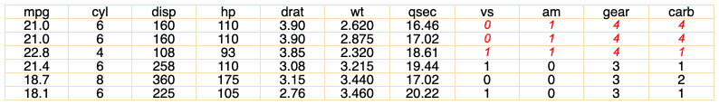

| style {flextable} | R Documentation |
Modify flextable text, paragraphs and cells formatting properties.
It allows to specify a set of formatting properties for a selection instead
of using multiple functions (.i.e bold, italic, bg) that
should all be applied to the same selection of rows and columns.
style( x, i = NULL, j = NULL, pr_t = NULL, pr_p = NULL, pr_c = NULL, part = "body" )
x |
a flextable object |
i |
rows selection |
j |
columns selection |
pr_t |
object(s) of class |
pr_p |
object(s) of class |
pr_c |
object(s) of class |
part |
partname of the table (one of 'all', 'body', 'header' or 'footer') |

library(officer) def_cell <- fp_cell(border = fp_border(color="wheat")) def_par <- fp_par(text.align = "center") ft <- flextable(head(mtcars)) ft <- style( ft, pr_c = def_cell, pr_p = def_par, part = "all") ft <- style(ft, ~ drat > 3.5, ~ vs + am + gear + carb, pr_t = fp_text(color="red", italic = TRUE) ) ft